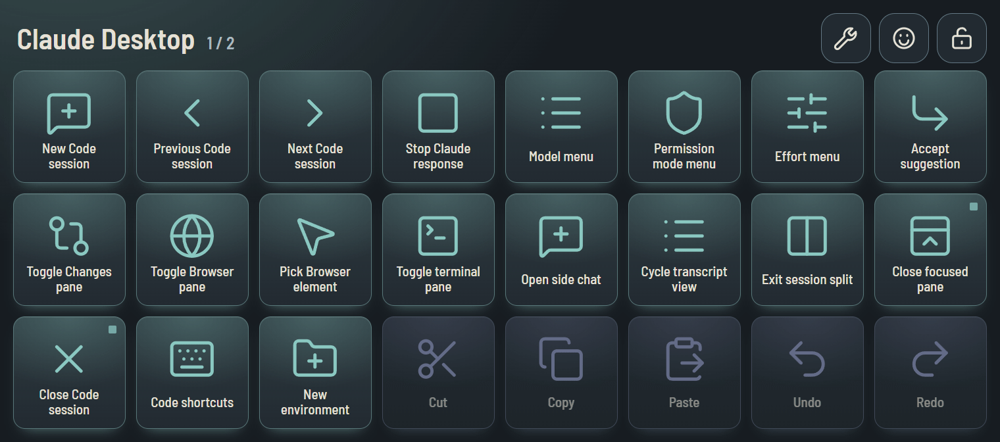

Shortcuts for the active app
The deck follows 451 Windows and installed web apps, including Visual Studio Code, Claude Desktop, SOLIDWORKS, KiCad, and Altium Designer. Windows Terminal shortcuts cover pane resizing, page scrolling, and text selection. Swipe to move between the pages of an app. The count beside the app name shows where you are.
Configure app shortcut pages · Watch custom shortcut pages